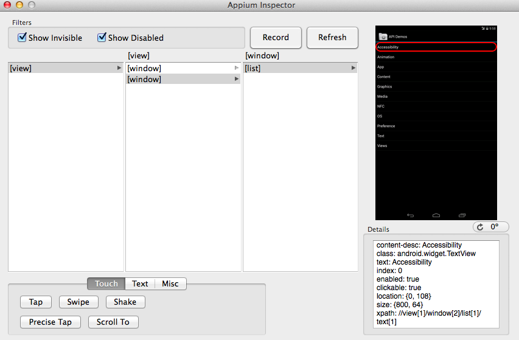
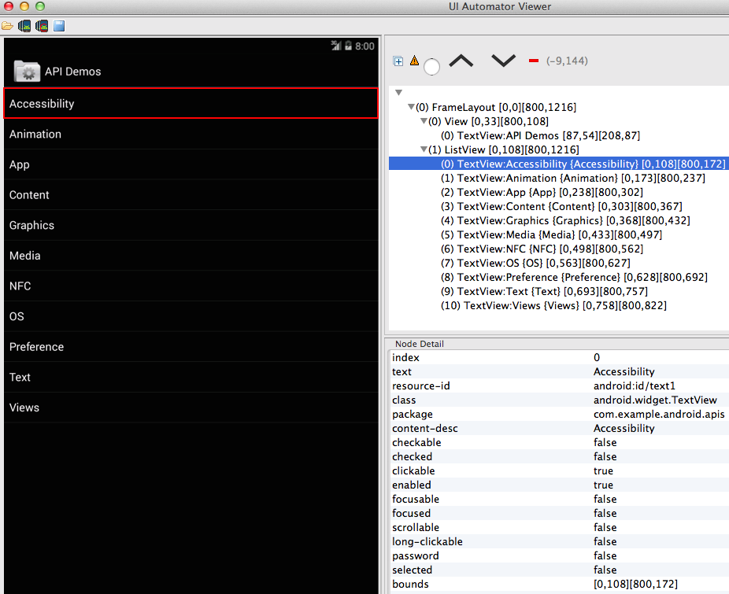
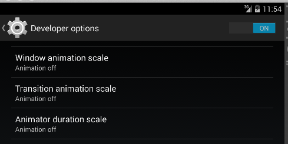

Module 2 - Ruby Appium Native Android Automation
Chapter 1 - Getting started with appium
Introduction
Appium enables iOS and Android automation using Selenium WebDriver. The same WebDriver bindings can be used across web and mobile.
- Open Source
- Apache 2.0 License
- Cross Platform
- Test Android on OS X, Windows, Linux
- Test iOS on OS X
- Native, Hybrid, Mobile Web
- Any language. Any framework.
- No app changes or source code access required.
In this chapter, we'll be preparing to automate a native Android app using appium with Ruby.
Install
This document is written for OS X 10.9.2 or better.
| Tool | Description |
|---|---|
| OS X | The mac operating system |
| Xcode | Apple's integrated development environment |
| rvm | The ruby version manager. Helps install ruby |
| gem | The rubygems command. A package manager for Ruby |
| Java | A programming language and software development kit |
| bundler | Enables managing gem dependencies |
| brew | Helps install software on Macs |
| npm | Node's package manager |
| grunt | A command line task runner for node.js |
| ant | A java build system |
| maven | A java build system with improved dependency management |
Note that Appium.app provides a ready to run version of appium. If you're using Appium.app then there's no need to run from source unless you want to use the latest and greatest.
Install Xcode 5.1 from the App Store.
Install the command line build tools within Xcode. (Xcode -> Preferences -> Downloads). Alternatively, download them directly from Apple.
- Install Java 7.
- Install the latest stable release of Ruby.
$ \curl -sSL https://get.rvm.io | bash -s stable $ rvm install ruby
- Make sure RVM is using the correct Ruby by default
$ rvm list $ rvm --default use 2.1.1
- If you have an old ruby/rvm, you can upgrade with
$ rvm get head $ rvm autolibs homebrew $ rvm install ruby
- Check that it's installed properly by printing the ruby version.
$ ruby --version
- Update RubyGems and Bundler.
gem update --system ;\ gem install --no-rdoc --no-ri bundler ;\ gem update ;\ gem cleanup
- Check that RubyGems is >= 2.1.5
$ gem --version 2.2.2
- Install
appium_consolegem.
gem uninstall -aIx appium_lib ;\ gem uninstall -aIx appium_console ;\ gem install --no-rdoc --no-ri appium_console
- Install flaky gem.
gem uninstall -aIx flaky ;\ gem install --no-rdoc --no-ri flaky
- Install brew
ruby -e "$(curl -fsSL https://raw.github.com/Homebrew/homebrew/go/install)"
- Install nodejs using brew.
brew update ;\ brew upgrade node ;\ brew install node
- Node should be
v0.10.26or better. Don't use the big green install button on nodejs.org or all npm commands will require sudo.
$ node --version
$ npm --version
- Install grunt.
npm install -g grunt grunt-cli
- Run the version command from the appium folder. If you're not in that folder, the grunt version will not display.
$ grunt --version grunt-cli v0.1.13 grunt v0.4.2
- Install ant if it's not already installed.
- Install maven 3.1.1 or better if it's not already installed. Old maven will not work.
$ ant -version Apache Ant(TM) version 1.8.2 compiled on June 20 2012 $ mvn -version Apache Maven 3.1.1 (0728685237757ffbf44136acec0402957f723d9a; 2013-09-17 11:22:22-0400)
- Clone appium
$ git clone git://github.com/appium/appium.git
- Run reset.sh. When running reset.sh, make sure to be on Xcode 5.0.2 for best results. You may have problems if you reset on Xcode 4.6.3 and then switch to a newer Xcode.
$ cd appium; ./reset.sh
If you see config errors, try cleaning git. git clean -dfx; git reset --hard
You can also reset by platform. ./reset.sh --ios
- Authorize for testing. Must run reset.sh as mentioned above before running the grunt task. If you're only testing Android, this can be skipped.
sudo `which grunt` authorize
- Start appium.
$ node .
Bash Profile
- You may have to add grunt as well
/usr/local/share/npm/bin/grunt
$ nano ~/.bash_profile PATH=$PATH:/Applications/apache-ant-1.8.4/bin PATH=$PATH:/usr/local/share/npm/bin/ export JAVA_HOME="`/System/Library/Frameworks/JavaVM.framework/Versions/Current/Commands/java_home`" export PATH
Troubleshooting
- If install fails, keep trying to install a few times.
When using Appium.app make sure to set Appium -> Preferences... -> Check
"Use External Appium Package" and set it to the path of Appium cloned from GitHub.
Fix permission errors. npm shouldn't require sudo.
$ brew uninstall node $ brew install node $ rm -rf ./node_modules $ rm -rf "/Users/`whoami`/.npm" $ rm -rf /usr/local/lib/node_modules/ $ ./reset.sh --ios $ ./reset.sh --android
SSL Issues
Unable to download data from https://rubygems.org/ - SSL_connect returned=1 errno=0 state=SSLv3 read server certificate B: certificate verify failed
- Fix SSL issues with:
$ rvm osx-ssl-certs update all $ rvm osx-ssl-certs status all
Maven on OS X 10.9
$ brew update $ brew install maven
Corrupt ruby gems
If you see:
invalid gem: package is corrupt, exception while verifying: undefined method
Then run $ rm -rf ~/.rvm and reinstall RVM.
Ruby IDE
I recommend the RubyMine IDE. For professional work, features such as auto completion, jump to definition, and refactoring are valuable.
If you have a preferred editor already, then feel free to continue using it.
Install Android
The following instructions are specific to installing Android on OS X.
Bash Profile
- Add the Android SDK tools folder to your path so you can run
android. - Define the
ANDROID_HOMEenv var pointing to SDK root. On OS X place it in~/.bash_profile - You may have to add grunt as well
/usr/local/share/npm/bin/grunt
# ~/.bash_profile export ANDROID_HOME=$HOME/Downloads/android-sdk-macosx export ANDROID_SDK=$ANDROID_HOME PATH=$PATH:/Applications/apache-ant-1.8.4/bin PATH=$PATH:/usr/local/share/npm/bin/ PATH=$PATH:$ANDROID_HOME/build-tools PATH=$PATH:$ANDROID_HOME/platform-tools PATH=$PATH:$ANDROID_HOME/tools export JAVA_HOME="`/System/Library/Frameworks/JavaVM.framework/Versions/Current/Commands/java_home`" export PATH
- Run
androidto open the SDK manager. - Install the following packages:

- Create a new Android virtual device.
Ensure
Use Host GPUis checked. SetVM Heapto64.32is too small.

android avd
Launch the emulator with
emulator @tutorialCheck that
hax is workingIf it's not, install hax directly from Intel
$ emulator @tutorial HAX is working and emulator runs in fast virt mode
- After launching the emulator, check that it's listed in adb devices. Run the following commands a few times until it's listed.
adb kill-server; adb devices
If you see error: protocol fault (no status) just keep running the command
until the emulator is detected.
With both the Android emulator running and the Appium server started, it's time to launch the appium console. Make sure the ENV vars are exported.
Start appium console
arc
- See running on OS X
HAXM on OS X 10.9
Install the HAXM 10.9 hotfix.
Helpful Links
| Link | Summary |
|---|---|
| npm | The main registry for npm packages. Appium is published here. |
| rubygems | The main registry for Ruby gems. The appium ruby bindings are published here. |
| RVM | RVM's homepage. Extensive documentation is available. |
| Ruby | The Ruby language homepage. Useful for keeping up to date with Ruby releases. |
Summary
We learned about the appium project and how it's useful for automating mobile applications. Then we installed all the necessary software to begin automation. Finally, helpful links were reviewed.
In the next chapter, we'll look at writing tests interactively using a console.
Chapter 2 - Appium Ruby Console
Introduction
A read-eval-print loop, REPL, is a great way to learn a new technology. In this chapter, we'll be using the Appium Ruby Console (ARC) to write tests.
An open source mobile app will be used to demonstrate the standard test workflow. We'll also look at a desktop app that makes writing tests a bit easier.
Compiling the Android sample app
cd into the appium repository root. Running ./reset.sh --android --dev will
build the sample AndroidApp app ApiDemos.
- Configuring and cleaning/building Android test app: ApiDemos
After seeing ---- reset.sh completed successfully ----,
you'll find appium's custom api demos at this location:
/appium/sample-code/apps/ApiDemos/bin/ApiDemos-debug.apk
Appium uses a modified ApiDemo app so make sure to use this version instead of what's provided in the SDK. The Appium fork of API Demos is on GitHub.
Origin of Api Demos
The ApiDemos app is provided by Google
in the Android SDK. Running the $ android command will allow you to download
Samples for SDK for each platform version. Once downloaded,
you can find the app at $ANDROID_HOME/platforms/android-VERSION/samples/
Prebuilt Android Sample App
I have a compiled version of the Api Demos apk on GitHub.
https://github.com/appium/ruby_lib/raw/master/ruby_lib_android/api.apk
Downloading from the above link will be faster than building from source.
Starting the console
Appium Ruby Console needs a platform and app path to get started.
If you see the following warning, it's safe to ignore. libdvm.so is part of
the android platform and not something we control.
WARNING: linker: libdvm.so has text relocations. This is wasting memory and is a security risk. Please fix.
We're developing locally, so create an appium.txt with the following:
$ nano appium.txt [caps] platformName = "android" app = "./api.apk"
The appium.txt contains two important pieces of information.
platformName is the platform we're automating. In this case, we're using android.
app is the path to api.apk. The ruby console is able to parse relative paths. This path will then be converted to an absolute path which appium uses to identify which app to install on the emulator.
In a new terminal tab, start the appium server using node . In a second
tab, launch the emulator using emulator @tutorial. In the final tab,
run the arc command from within the directory containing appium.txt.
The arc console will read appium.txt, connect the Android emulator,
and allow you to enter commands.
To assist with opening three tabs, I have a bash script on GitHub that starts appium, the emulator, and changes the working directory.
Page Command
With the console started, the next step is to begin automation.
The page command prints a list of elements that are of interest.
> page
post /execute
{
:script => "mobile: getStrings"
}
get /source
View
class: android.view.View
resource_id: android:id/action_bar_overlay_layout
FrameLayout
class: android.widget.FrameLayout
resource_id: android:id/action_bar_container
View
class: android.view.View
resource_id: android:id/action_bar
ImageView
class: android.widget.ImageView
resource_id: android:id/home
TextView
class: android.widget.TextView
text: API Demos
resource_id: android:id/action_bar_title
id: activity_sample_code
FrameLayout
class: android.widget.FrameLayout
resource_id: android:id/content
ListView
class: android.widget.ListView
resource_id: android:id/list
TextView
class: android.widget.TextView
text, name: Accessibility
resource_id: android:id/text1
TextView
class: android.widget.TextView
text, name: Animation
resource_id: android:id/text1
TextView
class: android.widget.TextView
text, name: App
resource_id: android:id/text1
TextView
class: android.widget.TextView
text, name: Content
resource_id: android:id/text1
TextView
class: android.widget.TextView
text, name: Graphics
resource_id: android:id/text1
TextView
class: android.widget.TextView
text, name: Media
resource_id: android:id/text1
TextView
class: android.widget.TextView
text, name: NFC
resource_id: android:id/text1
TextView
class: android.widget.TextView
text, name: OS
resource_id: android:id/text1
TextView
class: android.widget.TextView
text, name: Preference
resource_id: android:id/text1
TextView
class: android.widget.TextView
text, name: Text
resource_id: android:id/text1
id: autocomplete_3_button_7
TextView
class: android.widget.TextView
text, name: Views
resource_id: android:id/text1
Let's review in detail what this output means.
[1] pry(main)> page The 1 tells us this is the first command we've entered
during this pry session. The terminal will show [2] pry(main)> which means
it's ready for the second command. Pry is an open source
runtime development console that's used by appium
ruby console.
The next set of information is the network traffic.
post /execute
{
:script => "mobile: getStrings"
}
get /source
In response to the page command, two network requests were sent. The selenium-webdriver gem is used to generate these requests.
After that is the result of the page command.
TextView class: android.widget.TextView text: API Demos resource_id: android:id/action_bar_title id: activity_sample_code
TextView is the android specific class name
for the element.
Under each element name is a list of properties.
TextView class: android.widget.TextView text: API Demos resource_id: android:id/action_bar_title id: activity_sample_code
In this case we see there's a class, text, resource_id, and an id. To find by text we can use the text command.
> text('API Demos')
#<:webdriver::element:0x7f5348cbb3447ff2 id="1">
The text command will look for any text on screen.
To find by resource_id, we'd use:
> id('android:id/action_bar_title')
#<:webdriver::element:0x..fe9053092a74b142a id="2">
To find by strings.xml id, we'd use:
> id('activity_sample_code')
#<:webdriver::element:0x5c46252e10021cc id="4">
Once we've found the element, attributes such as text can be accessed.
> id('activity_sample_code').text
"API Demos"
These helper methods are documented on GitHub.
To view all possible elements, there's a source command. The page_class
command will give you an overview of what classes exist on the current page.
> page_class 12x android.widget.TextView 4x android.widget.FrameLayout 2x android.widget.LinearLayout 2x android.view.View 1x android.widget.ListView 1x android.widget.ImageView
The page command excels at identifying the elements you're most likely interested in automating. I encourage you to read through the existing docs and try the methods on different elements.
Ending the session
Once we're done with a testing session, it's very important to cleanly quit. If a session is not terminated properly then appium will consider the session to still be in progress. This blocks all future sessions from working.
In the appium ruby console, the best way to quit the session is by using the
x command. The x command first ends the webdriver session,
and then ends the console.
If you desire to end only the webdriver session and remain in the console, use driver_quit.
It's also important to end sessions when running tests outside the console. All the selenium bindings offer a quit method. This should be invoked once the testing session is over.
Appium.app Inspector
We've covered finding elements using the page command on the terminal. Appium also has a GUI tool on OS X called Appium.app.
Appium.app enables visual exploration of the application to identify elements. In addition, gestures are supported and can be exported to working code.
When using Appium.app for the first time, click the checkbox button. This will activate appium doctor. If you don't see all green checkmarks, then something is incorrect with your system configuration. Make the necessary changes, press the checkbox button again, and then proceed when everything is passing.

By default Appium.app uses a bundled version of appium. If you're running the
newest appium version from source, then click Appium -> Preferences and
set Use External Appium Package.

While most interactions can be done completely within the console, Appium.app is great for identifying the proper values for appium's gesture commands.
Appium.app's inspector works on Android. The data is based on the same source as the page command that we used in the last lesson.

uiautomatorviewer
Google includes the uiautomatorviewer tool in the Android SDK. uiautomator requires API 16 (Android 4.1, Jelly Bean) or above. Appium's uiautomator support works best on API 17 (Android 4.2, Jelly Bean MR1) or above. For this tutorial, we're interested in API 19.
Run android avd, select your Android emulator, press Edit, then ensure that
'Use Host GPU' is not checked. If we're using the Host GPU then uiautomatorviewer
will be unable to capture screenshots.
Also ensure that no Android appium sessions are running. Appium uses uiautomator internally and this will prevent uiautomatorviewer from working if they're both running at the same time.
Manually launch the Api Demos activity on the emulator then click
Device Screeshot with compressed Hierarchy. The button has an image of a droid
with a red circle. The following is a screenshot of the end result:

Once you're done with uiautomatorviewer, you may want to restore the Host GPU option. The Android emulator is significantly faster with it enabled.
Helpful Links
| Link | Summary |
|---|---|
| Appium | New versions of Appium.app are available on the appium homepage. |
| appium_lib gem | Appium's ruby library is on GitHub. |
| appium_console gem | Appium's Ruby Console is also on GitHub. |
| Selenium JsonWireProtocol | The network traffic displayed in the console conforms to the JSON Wire Protocol. |
Summary
We compiled the open source API Demos app from source. Then the Appium Ruby Console was used find elements with the page command. After ending the session, we looked at two visual tools. Appium.app is great for generating gestures and uiautomatorviewer helps inspect elements on the page visually.
In the next chapter, we'll write our first test.
Chapter 3 - Writing your first test
Introduction
Now that we've looked at the commands in the console, it's time to write our first test. This involves using a test framework, following the page object pattern, and running the test automatically.
Automating a simple action
The commands in the test are exactly the same as those used in the console. Code can be copied and pasted to and from the console to form production tests.
The basic structure of the Api Demos test app is that clicking on the text brings you to a dedicated page about that text. Accessibility triggers the Accessibility page, Animation triggers Animation, and so on.
We're going to verify each element brings us to the correct page.
s_text('Accessibility').click
s_text_exact 'Accessibility Node Provider'
For the first entry, we click on Accessibility and then assert that the Accessibility page is displayed. The code is valid however there's an issue related to timing.
In the console, the implicit wait is turned to zero for immediate feedback. That means when an element isn't found the test ends immediately because an element not found exception is raised.
To overcome these timing problems, the wait helper method is useful.
wait { s_text('Accessibility').click }
wait { s_text_exact 'Accessibility Node Provider' }
Now the code will wait up to 30 seconds for the command to succeed. If it succeeds then the next line is executed immediately. If the command is still failing after 30 seconds, an error is raised. If this error is not rescued then the test will end in failure.
Another problem with the test code is that we're depending on the exact text value. When the app changes, our tests will break.
cell_1 = wait { s_text 2 }
wait { cell_1.click }
wait { find_exact 'Accessibility Node Provider' }
In this code, we're finding the first text by index. Index 2 contains the
first cell. Index 1 is the header API Demo. To verify we're on the
accessibility page after clicking, the name selector is used. Name is
implemented as a content description search when using uiautomator. Thia
allows the text to change while retaining the content description. The test
is now resilient to text changes. It'll break only when the elements are
reordered or the content description changes.
To conclude this lesson, we'll look at the code to automate all 12 cells.
cell_names = tags('text').map { |cell| cell.name }
cell_names[1..-1].each do |cell_name|
wait { scroll_to_exact(cell_name).click }
wait_true { ! exists { find_exact cell_name } }
wait { back }
wait { find_exact('Accessibility'); find_exact('Animation') }
end
First we're finding all android.widget.TextView using the shortcut tag name
`text. After that, we're saving the names to the cell_names array.
[ 0] "API Demos", [ 1] "Accessibility", [ 2] "Animation", [ 3] "App", [ 4] "Content", [ 5] "Graphics", [ 6] "Media", [ 7] "NFC", [ 8] "OS", [ 9] "Preference", [10] "Text", [11] "Views"
The first item in the array is the page header. That's discarded with
cell_names[1..-1]. For the remaining elements, we're scrolling to and
clicking each of them. To detect that the click was successful,
the code waits for the cell name to no longer be visible.
wait_true { ! exists { find_exact cell_name } }
After that we're returning to the home page by using back. The back method
will return even though the app hasn't finished transitioning. I recommend
disabling animations under in Dev Settings. This can also be done programmatically.

Finally, we're checking to ensure we've returned to the homepage before looking for the next element.
wait { find_exact('Accessibility'); find_exact('Animation') }
Page Object Pattern
Now that we have a test fully written, it's time to apply the page object pattern.
This pattern is language independent and applies to any Selenium testing, not just appium. The idea is to create an abstraction at the page level. Each page knows how to perform the relevant actions.
Clone the git repository and copy the ruby_android directory to your computer.
git clone https://github.com/appium/tutorial.git
The pages are contained within the page folder, and the test inside specs. The test code is:
home.accessibility_click
back_click
home.animation_click
back_click
This says from the home page, find the accessibility element and click it. Then go back, find the animation element and click it, and finally go back once more. The page objects are implemented using modules.
module APIDemos
module Home
class << self
There's a top level APIDemos module followed by a module for the
individual page. After that the class << self line makes the following
methods static.
def accessibility_click
self.assert
wait { s_text(2).click }
accessibility.assert
end
This is the first element method. First the method asserts that the app
is on the home page. Self in this case refers to the Home module. self
.assert is the same as home.assert. After that the second static text
is clicked. Finally, the code asserts the app is on the accessibility page.
The accessibility page object defines the assert methods:
def assert_exists
s_text_exact 'Accessibility Node Querying'
end
def assert
wait { self.assert_exists }
end
We're looking for an exact text match to detect the accessibility page.
appium.txt enables these page methods to be used from within the appium
ruby console. In the next lesson, we'll review running the entire test using
Rake.
Running the test with Rake
Now that we have the code written and it's following best practices, let's investigate a new way to run it.
One way to run the test is to copy and paste the lines into the console. This can be done line by line when debugging. You could also copy and paste the entire test.
When running a full test, it's often preferable to use the rake command.
rake android[test]
The Rakefile for this project is setup to define an android task. That task accepts the test name as an argument.
Running a single test this way is great for debugging as the individual lines of the source code are printed to the console. It also reproduces how the test will be run in continuous integration. If there are timing issues then they will be apparent when everything is run together.
The rake output for our simple 4 line test is below:
$ rake android[test]
adb uninstall com.example.android.apis
WARNING: linker: libdvm.so has text relocations. This is wasting memory and is a security risk. Please fix.
Success
Rake appium.txt path is: /tutorial/modules/source/ruby_android/appium.txt
bundle exec ruby ./appium/run.rb android "test"
appium.txt path: /tutorial/modules/source/ruby_android/appium.txt
Exists? true
Loading /tutorial/modules/source/ruby_android/appium.txt
{
"DEVICE" => "android",
"APP_PATH" => "./api.apk",
"require" => [
[0] "./appium/android/pages",
[1] "./appium/android/common.rb"
]
}
First the rake task uninstalls any existing version of the apk. The android emulator comes preloaded with an API Demos that's different from what we're expecting. If the tests run against that version then they'll fail. Uninstalling ensures we're testing against the correct version.
We've loaded appium.txt and then used bundle exec to run a ruby command with the gems defined in the Gemfile. The appium.txt defines what device to use, the app to install, and the files to load.
Start driver
Use selendroid? false
Debug is: true
{
:fast_clear => true,
:debug => true,
:wait => 1,
:export_session => true
}
Device is: Android
The driver is started in debug mode and we're able to see the session traffic. The session capabilities are sent to the appium server. We're using uiautomator (Device Android) instead of selendroid. The reset method fast clear is enabled. The implicit wait is set to 1 second. Export session is enabled. This makes it possible to use the flake gem with Sauce Labs.
post /session
{
:desiredCapabilities => {
:compressXml => false,
:platform => "Linux",
:version => "4.3",
:device => "Android",
:"device-type" => "tablet",
:"device-orientation" => "portrait",
:name => "Ruby Console Android Appium",
:"app-package" => nil,
:"app-activity" => nil,
:"app-wait-activity" => nil,
:fastClear => true,
:app => "/tutorial/modules/source/ruby_android/api.apk"
}
}
compressXml only works on API 18 or above so it's disabled by default. When enabled, the source output and XPaths are much cleaner.
app-package, app-activity, and app-wait-activity are set to nil. By omitting these in the desired capabilities, appium will inspect the APK and use reasonable defaults.
post /execute
{
:script => "mobile: setCommandTimeout",
:args => [
[0] {
:timeout => 9999
}
]
}
The command timeout is set to a high value. That means if there's a long pause between sending commands to appium, the test will not automatically fail.
post /timeouts/implicit_wait
{
:ms => 1000
}
By default, we're waiting 1 second for an element to show up. Even though implicit wait is used, we're also taking advantage of a client side wait.
Loading one test: /tutorial/modules/source/ruby_android/appium/android/specs/./test.rb
We've found one test, test.rb, and execution begins.
test | 1 |android/specs/test.rb:5
This is the 1st test in test.rb and it's named test.
home.accessibility_click
The actual line of code from test.rb that's running is displayed in the console.
post /element
{
:using => "xpath",
:value => "text[@text='Accessibility']"
}
post /element
{
:using => "xpath",
:value => "text[@text='Animation']"
}
post /element
{
:using => "xpath",
:value => "//text[2]"
}
post /element/3/click
post /element
{
:using => "xpath",
:value => "text[@text='Accessibility Node Querying']"
}
That one call to home.accessibility_click generated 5 network requests. The
first two are for home.assert, the third and fourth are for clicking on the
button, and finally we're asserting we made it to the accessibility page.
back_click def back_click sleep 2 back post /back
The back_click logic sleeps two seconds to prevent flakiness and then invokes the back method on the appium server.
home.animation_click
post /element
{
:using => "xpath",
:value => "text[@text='Accessibility']"
}
post /element
{
:using => "xpath",
:value => "text[@text='Animation']"
}
post /element
{
:using => "xpath",
:value => "//text[3]"
}
post /element/7/click
post /element
{
:using => "xpath",
:value => "text[@text='Bouncing Balls']"
}
This is the second button. The app is on the animation page.
back_click def back_click sleep 2 back post /back end
And now the app is on the home page.
Finished in 14 secs 1 runs, 0 assertions, 0 failures, 0 errors, 0 skips delete
At the end of the test, statistics are displayed. This is a successful run
because there are no failures, errors, or skips. The final delete is the
result of calling driver.quit which tells appium to end the session.
Helpful Links
| Link | Summary |
|---|---|
| appium_lib gem docs | The Ruby lib has extensive documentation. A number of Ruby helper methods are available. |
| Selenium Ruby bindings | The full API of the selenium ruby bindings is available. Under the hood the ruby bindings for appium use the selenium ruby bindings. |
| Selenium page objects | The page object pattern is explained in great detail. |
| Rake | The Rake homepage contains an overview of the tool. |
Summary
We successfully wrote a complete test and applied the page object pattern to it. After that, the rake gem was used to run the test.
In the next chapter, we're going to look at even more ways to run tests.
Chapter 4 - Running tests
Introduction
So far we've looked at two different ways to run tests, the console and rake.
In this chapter we'll cover running using the flaky gem, locally, on Jenkins, and on Sauce.
Flaky Gem
The flaky gem is a complete test runner specialized for appium Ruby tests.
It runs only on OS X and supports iOS and Android testing. After writing a number of UI tests, you'll quickly notice that flakiness is a serious problem . One way we're able to overcome this issue is by running failed tests multiple times.
The flaky gem has a number of run modes:
- all tests - run everything
- from file - run a set of tests as specified in a text file
- one test - run only one test
- two pass - run tests once, then run only the failures x amount of times.
The best way to understand these modes is to see them in action.
In addition to running the tests and recording pass/fail, there are a number of interesting features.
The test run is automatically video recorded, in addition to debug and crash logs. The crash logs are also recorded. After a run, all the specific information is stored in /tmp/flaky
This tool was designed for a highly specific use case (testing virtual devices) so even if it doesn't work out of the box for you, some of the open source code may still be valuable.
flaky uses the same test syntax as rake.
To run the test.rb from the last lesson 3 times, use flake 3 android[test]
$ flake 3 android[test] Recording Video: true Running test 3x android/specs/test ✓ ✓ ✓ 1 Tests Success (1): android/specs/test, runs: 3, pass: 3, fail: 0 Finished in 1 min 6 secs Mar 16 12:55 pm - 12:56 pm 3/16/2014 1 0 1 100 --
This output shows that we're able to run the test 3 times without issue.
Additional information is saved in /tmp/flaky. It's not uncommon to have a
test that fails 1 in 10 times. Rerunning failed tests is a way to see how
stable they are.
Running Locally
For completeness, there are three primary ways of running tests locally.
- appium ruby console
- rake
- flake
Running locally means both the test and the virtual device are on your computer. Manually running the console, rake, or flake is nice for development. However to run the tests automatically, a continuous integration solution is needed. That's what we're discussing in the next lesson.
Running using Jenkins CI
Jenkins is a popular open source CI server. Appium works with any CI.
A simple way to get started is by downloading the Jenkins war.
then run
java -jar jenkins.war
now open a web browser and visit http://localhost:8080/
Click New Item, enter Appium job in Item name,
select Build a free-style software project then click OK.
Scroll down to Build, and press Add build step, then select Execute shell
. Add the following:
#!/bin/bash --login
killall -9 emulator64-x86
emulator @tutorial &
sleep 40
# http://ncona.com/2014/01/detect-when-android-emulator-is-ready/
svc_bootanim=''
while [[ 'stopped' != ${svc_bootanim:0:7} ]]; do
sleep 3
svc_bootanim=`adb shell getprop init.svc.bootanim`
adb kill-server; adb devices
done
adb uninstall com.example.android.apis
cd ~/tutorial/modules/source/ruby_android
bundle update
flake 1 android[test]
killall -9 emulator64-x86
Press OK, and then Build Now near the top left of the page. Click on the
build link inside the Build History tab. Finally select Console Output.
You should see something like this:
Started by user anonymous Building in workspace /.jenkins/jobs/Android/workspace [workspace] $ /bin/bash --login /var/folders/w7/c1yh5bps5dnc0frz0tbj_dmh0000gn/T/hudson5624873839237212617.sh No matching processes belonging to you were found HAX is working and emulator runs in fast virt mode * daemon not running. starting it now on port 5037 * * daemon started successfully * List of devices attached emulator-5554 device * daemon not running. starting it now on port 5037 * * daemon started successfully * List of devices attached emulator-5554 device WARNING: linker: libdvm.so has text relocations. This is wasting memory and is a security risk. Please fix. Failure Fetching gem metadata from https://rubygems.org/............ Fetching additional metadata from https://rubygems.org/.. Resolving dependencies... Using rake (10.1.1) Using awesome_print (1.2.0) Using json (1.8.1) Using posix-spawn (0.3.8) Using ffi (1.9.3) Using childprocess (0.5.1) Using multi_json (1.9.0) Using rubyzip (1.1.0) Using websocket (1.0.7) Using selenium-webdriver (2.40.0) Using blankslate (2.1.2.4) Using parslet (1.5.0) Using toml (0.1.1) Using appium_lib (0.21.0) Using bond (0.5.1) Using coderay (1.1.0) Using method_source (0.8.2) Using slop (3.5.0) Using pry (0.9.12.6) Using numerizer (0.1.1) Using chronic_duration (0.10.4) Using spec (5.0.19) Using appium_console (0.5.9) Using flaky (0.0.31) Using mime-types (2.2) Using rest-client (1.6.7) Using test_runner (0.9.37) Using bundler (1.5.3) Your bundle is updated! Recording Video: true Running test 1x [36m android/specs/test [0m[32m ✓[0m 1 Tests Success (1): android/specs/test, runs: 1, pass: 1, fail: 0 Finished in 24 secs Mar 16 1:09 pm - 1:10 pm 3/16/2014 1 0 1 100 -- Finished: SUCCESS
This demonstrates that the technology works well in CI. For a proper setup, the Jenkins master node would be on a different physical machine. The executor would then attach to the master node. The code would be pulled from GitHub using the Git plugin. The android emulator plugin is an alternative to launching the emulator from within the shell script. There are also a number of other helpful plugins such as Green spheres.
In the next lesson, we'll look at running the same test on Sauce Labs. This means we don't have to worry about setting up build nodes.
Running on Sauce
All the tools and techniques we've covered so far produce tests that run well on Sauce Labs.
Testing is best done by using a continuous integration software such as Jenkins.
With a few tweaks to the Jenkins setup we used in the previous lesson,
we'll be running on Sauce very quickly. upload.rb takes care of sending the
app to Sauce Labs using the storage API.
#!/bin/bash --login cd ~/tutorial/modules/source/ruby_android bundle update export SAUCE_USERNAME="your username from sauce" export SAUCE_ACCESS_KEY="your accesskey from sauce" export UPLOAD_FILE='api.apk' ruby ./upload/upload.rb export SAUCE_PATH="sauce-storage:api.apk" export APP_NAME="Ruby Android Appium tutorial" flake 1 android[test]
Now when we run the job, instead of using a local emulator, it'll run on the Sauce cloud.
Started by user anonymous Building in workspace /.jenkins/jobs/Android on Sauce/workspace [workspace] $ /bin/bash --login /var/folders/w7/c1yh5bps5dnc0frz0tbj_dmh0000gn/T/hudson4299606924074097008.sh Fetching gem metadata from https://rubygems.org/............ Fetching additional metadata from https://rubygems.org/.. Resolving dependencies... Using rake (10.1.1) Using awesome_print (1.2.0) Using json (1.8.1) Using posix-spawn (0.3.8) Using ffi (1.9.3) Using childprocess (0.5.1) Using multi_json (1.9.0) Using rubyzip (1.1.1) Using websocket (1.0.7) Using selenium-webdriver (2.40.0) Using blankslate (2.1.2.4) Using parslet (1.5.0) Using toml (0.1.1) Using appium_lib (0.21.0) Using bond (0.5.1) Using coderay (1.1.0) Using method_source (0.8.2) Using slop (3.5.0) Using pry (0.9.12.6) Using numerizer (0.1.1) Using chronic_duration (0.10.4) Using spec (5.0.19) Using appium_console (0.5.9) Using flaky (0.0.31) Using mime-types (2.2) Using rest-client (1.6.7) Using test_runner (0.9.37) Using bundler (1.5.3) Your bundle is updated! File already uploaded Recording Video: false Running test 1x cmd: cd /tutorial/modules/source/ruby_android; rake android['test',true] [36m android/specs/test [0m[32m ✓[0m https://saucelabs.com/tests/fd94de19e2d84beaa7e93e0853137bde 1 Tests Success (1): android/specs/test, runs: 1, pass: 1, fail: 0 Finished in 33 secs Mar 16 2:36 pm - 2:36 pm 3/16/2014 1 0 1 100 -- Finished: SUCCESS
Visiting the link on Sauce will allow you to review the test logs, video recordings, and other information.
Helpful Links
| Link | Summary |
|---|---|
| Jenkins CI | The Jenkins homepage contains the latest releases and additional information. |
| Jenkins Plugins | One of the best parts of Jenkins is the extensive amount of plugins. |
| flaky gem | flaky is on GitHub. |
| screen_recording | The objective c code for recording Android/iOS is on GitHub |
| Sauce appium tutorial | Sauce has great documentation for getting started on their platform. |
Summary
We successfully wrote a complete test and applied the page object pattern to it. After that, the rake gem was used to run the test.
In the next chapter, we're going to look at even more ways to run tests.
Chapter 5 - Conclusion
Introduction
In this final chapter, we'll look at resources, support, and how to search the source code.
Additional Resources
Appium relies on uiautomator for Android automation. Selendroid is also supported for Android and is particularly useful for older devices and webview support. While a deep understanding of these frameworks is not required, it's helpful when determining what's possible with appium.
Google has posted the session videos from GTAC 2013. There are a number of excellent sessions related to user interface automation.
- GTAC 2013: Breaking the Matrix - Android Testing at Scale
- Moderator GTAC 2013 Breaking the Matrix
- This session explains Google's approach to android testing. A blog post is also available.
- GTAC 2013: Appium: Automation for Mobile Apps
- Jonathan Lipps, the chief architect of Appium, explains mobile app automation.
- GTAC 2013: Android UI Automation
- Google's uiautomator engineers talk about the future of uiautomator.
- GTAC 2013: Espresso: Fresh Start to Android UI Testing
- Google's newest Android testing framework is presented. This isn't directly related to appium, however it contains some useful information. The project has since been open sourced.
Community Support
Appium has community support in the form of a Google discussion group.
Make sure to read through the online documentation before posting a question. In addition to the documentation, make sure to search the group archive to see if your question has already been asked.
You may want to review How To Ask Questions The Smart Way if you're new to online discussion groups.
Professional Support
Sauce Labs offers professional support for appium on their hosted cloud. If you are a Sauce Labs customer and encounter an issue on the Sauce platform, then make sure to open a support ticket.
In addition to Sauce Labs, there's a growing number of companies that offer appium as part of their commercial automation products.
Google actively develops Android. If you've found an issue with the Android platform then let them know. It's best to make sure that the bug is in Android itself instead of in appium before opening an android issue.
Searching the Source Code
Appium is fully open source. Very few parts of the automation stack are not available on GitHub. The Apple tooling, for example Instruments, is proprietary. For everything else, GitHub is an amazing tool to look at the source.
If we're interested to see what happens when we type "page" in the Ruby console, the answer is only a search away. Notice that quotes are used for "def page" so that we're looking for a ruby method starting with page.
Selenium and all the official bindings are also on GitHub. Here's a sample search showing that the Ruby bindings support the status command.
appium is composed of modules. The module related to uiautomator is appium-uiautomator. To find out what happens on Android when we request the page source, search for dumpWindowHierarchy. From there we can tell what uiautomator method appium is using to get the source code.
Android is open source and so are the testing tools. This is helpful to identify how methods are implemented. UiDevice.java contains a dumpWindowHierarchy method. The JavaDoc says the data is saved to /data/local/tmp. However upon looking at the actual code, the location is dynamically defined depending on where the device has it's data directory. Open source is wonderful for quickly understanding the best way to automate on Android.
Helpful Links
| Link | Summary |
|---|---|
| Sauce Labs | Sauce Labs supports appium for automated mobile testing in the cloud. |
| GitHub | GitHub contains all the appium source code. |
| Appium docs | Appium has documentation inside the git repository |
| uiautomator docs | Google's documentation for uiautomator. |
Summary
We covered a number of resources from Google GTAC videos to reading the Android source code. In addition to community support, appium is available for professional support from companies such as Sauce Labs. Finally, we looked at ways to search GitHub to answer questions about automation.